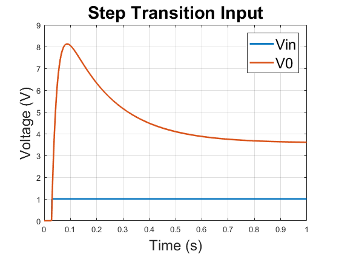

Contents
1a)
C and G matrices are shown below
G1=1/1;
C=0.25;
G2=1/2;
L=0.2;
G3=1/10;
alpha=100;
G4=1/0.1;
G0=1/1000;
G = [1 0 0 0 0 0 0;
-G2 G1+G2 -1 0 0 0 0;
0 1 0 -1 0 0 0;
0 0 -1 G3 0 0 0;
0 0 0 0 -alpha 1 0;
0 0 0 G3 -1 0 0;
0 0 0 0 0 -G4 G4+G0];
C = [0 0 0 0 0 0 0;
-C C 0 0 0 0 0;
0 0 -L 0 0 0 0;
0 0 0 0 0 0 0;
0 0 0 0 0 0 0;
0 0 0 0 0 0 0;
0 0 0 0 0 0 0];
% V = [V1
% V2
% IL
% V3
% I3
% V4
% V0]
F = [0; 0; 0; 0; 0; 0; 0];
1b)
DC SWEEP
vinvec = zeros(1,21); % vin vector v0vec = zeros(1,21); % v0 vector v3vec = zeros(1,21); % v3 vector for i=1:21 % sweeping vin from -10 to 10 F = [i-11; 0; 0; 0; 0; 0; 0]; V = G\F; % DC solution vinvec(i) = i-11; v0vec(i) = V(7); v3vec(i) = V(4); end figure (1) plot(vinvec,v0vec) hold on grid on plot(vinvec,v3vec) title('\fontsize{22}DC Vin Sweep') xlabel('\fontsize{18}Vin (V)') ylabel('\fontsize{18}Voltage (V)') legend('\fontsize{18}v0','\fontsize{18}v3')

1c)
AC SWEEPS
omegavec = logspace(-3,5,30); % 30 log spaced values from 10^-3 to 10^5 v0vec = zeros(1,30); F = [1; 0; 0; 0; 0; 0; 0]; for i=1:30 V = (G+i*omegavec(i)*C)\F; % AC solution v0vec(i) = V(7); end figure (2) loglog(omegavec,v0vec) hold on grid on title('\fontsize{22}Frequency vs. V0') xlabel('\fontsize{18}Frequency (rads)') ylabel('\fontsize{18}V0 (V)') figure (3) semilogx(omegavec,20*log10(v0vec)) hold on grid on title('\fontsize{22}Frequency vs. Gain (V0/V1)') xlabel('\fontsize{18}Frequency (rads)') ylabel('\fontsize{18}Gain (dB)')
1d and e)
Numerical solution in time domain, with Fourier Transforms
dt = 1e-3; T = 1; fs = T/dt; time = 0:(1/fs):(1-1/fs); n=fs; f = (0:n-1); V = zeros(7,T/dt); F = zeros(7,T/dt); Ap = inv(C/dt + G); % Vin defined as 0 until 0.03 when source turns on F(1,0.03/dt:T/dt) = ones([1,T/dt - 0.03/dt+1]); for i=2:T/dt V(:,i) = Ap*(C*V(:,i-1)/dt + F(:,i)); end figure (4) plot(time,F(1,:)','LineWidth',2) hold on grid on plot(time,V(7,:)','LineWidth',2) title('\fontsize{22}Step Transition Input') xlabel('\fontsize{18}Time (s)') ylabel('\fontsize{18}Voltage (V)') legend('\fontsize{18}Vin','\fontsize{18}V0') XF1 = (fft(F(1,:))).^2/n; YF1 = fftshift(XF1); fshift = (-n/2:n/2-1)*(fs/n); % zero-centered frequency range powershiftF1 = abs(YF1).^2/n; % zero-centered power XV7 = (fft(V(7,:))).^2/n; YV7 = fftshift(XV7); fshift = (-n/2:n/2-1)*(fs/n); % zero-centered frequency range powershiftV7 = abs(YV7).^2/n; % zero-centered power figure (5) plot(fshift,powershiftF1,'LineWidth',2) hold on grid on plot(fshift,powershiftV7,'LineWidth',2) title('\fontsize{22}Frequency Composition of Step Transition Input') xlabel('\fontsize{18}Frequency (Hz)') ylabel('\fontsize{18}Amplitude') legend('\fontsize{18}Vin','\fontsize{18}V0') xlim([-50 50]) % Vin defined as a sinusoid f = 1/0.03; F1 = zeros(7,T/dt); F2 = zeros(7,T/dt); V = zeros(7,T/dt); V1 = zeros(7,T/dt); V2 = zeros(7,T/dt); for i=dt/dt:T/dt F(1,i) = sin(2*pi*f*dt*i); F1(1,i) = sin(2*pi*(f*10)*dt*i); % 10 times the frequency F2(1,i) = sin(2*pi*(f*0.1)*dt*i); % 1/10 of the frequency end for i=2:T/dt V(:,i) = Ap*(C*V(:,i-1)/dt + F(:,i)); V1(:,i) = Ap*(C*V1(:,i-1)/dt + F1(:,i)); V2(:,i) = Ap*(C*V2(:,i-1)/dt + F2(:,i)); end figure (6) plot(time,F(1,:)','LineWidth',2) hold on grid on plot(time,V(7,:)','LineWidth',2) title('\fontsize{22}Sinusoid Input, f=1/0.03') xlabel('\fontsize{18}Time (s)') ylabel('\fontsize{18}Voltage (V)') legend('\fontsize{18}Vin','\fontsize{18}V0') XF1 = (fft(F(1,:))).^2/n; YF1 = fftshift(XF1); fshift = (-n/2:n/2-1)*(fs/n); % zero-centered frequency range powershiftF1 = abs(YF1).^2/n; % zero-centered power XV7 = (fft(V(7,:))).^2/n; YV7 = fftshift(XV7); fshift = (-n/2:n/2-1)*(fs/n); % zero-centered frequency range powershiftV7 = abs(YV7).^2/n; % zero-centered power figure (7) plot(fshift,powershiftF1,'LineWidth',2) hold on grid on plot(fshift,powershiftV7,'LineWidth',2) title('\fontsize{22}Frequency Composition of Sinusoid Input, f=1/0.03') xlabel('\fontsize{18}Frequency (Hz)') ylabel('\fontsize{18}Amplitude') legend('\fontsize{18}Vin','\fontsize{18}V0') xlim([-50 50]) figure (8) plot(time,F1(1,:)','LineWidth',2) hold on grid on plot(time,V1(7,:)','LineWidth',2) title('\fontsize{22}Sinusoid Input, f=1/0.003') xlabel('\fontsize{18}Time (s)') ylabel('\fontsize{18}Voltage (V)') legend('\fontsize{18}Vin','\fontsize{18}V0') axis([0 0.2 -1 1]); XF1 = (fft(F1(1,:))).^2/n; YF1 = fftshift(XF1); fshift = (-n/2:n/2-1)*(fs/n); % zero-centered frequency range powershiftF1 = abs(YF1).^2/n; % zero-centered power XV7 = (fft(V1(7,:))).^2/n; YV7 = fftshift(XV7); fshift = (-n/2:n/2-1)*(fs/n); % zero-centered frequency range powershiftV7 = abs(YV7).^2/n; % zero-centered power figure (9) plot(fshift,powershiftF1,'LineWidth',2) hold on grid on plot(fshift,powershiftV7,'LineWidth',2) title('\fontsize{22}Frequency Composition of Sinusoid Input, f=1/0.003') xlabel('\fontsize{18}Frequency (Hz)') ylabel('\fontsize{18}Amplitude') legend('\fontsize{18}Vin','\fontsize{18}V0') xlim([-500 500]) figure (10) plot(time,F2(1,:)','LineWidth',2) hold on grid on plot(time,V2(7,:)','LineWidth',2) title('\fontsize{22}Sinusoid Input, f=1/0.3') xlabel('\fontsize{18}Time (s)') ylabel('\fontsize{18}Voltage (V)') legend('\fontsize{18}Vin','\fontsize{18}V0') XF1 = (fft(F2(1,:))).^2/n; YF1 = fftshift(XF1); fshift = (-n/2:n/2-1)*(fs/n); % zero-centered frequency range powershiftF1 = abs(YF1).^2/n; % zero-centered power XV7 = (fft(V2(7,:))).^2/n; YV7 = fftshift(XV7); fshift = (-n/2:n/2-1)*(fs/n); % zero-centered frequency range powershiftV7 = abs(YV7).^2/n; % zero-centered power figure (11) plot(fshift,powershiftF1,'LineWidth',2) hold on grid on plot(fshift,powershiftV7,'LineWidth',2) title('\fontsize{22}Frequency Composition of Sinusoid Input, f=1/0.3') xlabel('\fontsize{18}Frequency (Hz)') ylabel('\fontsize{18}Amplitude') legend('\fontsize{18}Vin','\fontsize{18}V0') xlim([-50 50]) % Vin defined as a gaussian V = zeros(7,T/dt); F = zeros(7,T/dt); F(1,:) = normpdf(time,0.06,0.03)*max(normpdf(time,0.06,0.03))^(-1); for i=2:T/dt V(:,i) = Ap*(C*V(:,i-1)/dt + F(:,i)); end figure (12) plot(time,F(1,:)','LineWidth',2) hold on grid on plot(time,V(7,:)','LineWidth',2) title('\fontsize{22}Gaussian Pulse') xlabel('\fontsize{18}Time (s)') ylabel('\fontsize{18}Voltage (V)') legend('\fontsize{18}Vin','\fontsize{18}V0') XF1 = (fft(F(1,:))).^2/n; YF1 = fftshift(XF1); fshift = (-n/2:n/2-1)*(fs/n); % zero-centered frequency range powershiftF1 = abs(YF1).^2/n; % zero-centered power XV7 = (fft(V(7,:))).^2/n; YV7 = fftshift(XV7); fshift = (-n/2:n/2-1)*(fs/n); % zero-centered frequency range powershiftV7 = abs(YV7).^2/n; % zero-centered power figure (13) plot(fshift,powershiftF1,'LineWidth',2) hold on grid on plot(fshift,powershiftV7,'LineWidth',2) title('\fontsize{22}Frequency Composition of Gaussian Pulse') xlabel('\fontsize{18}Frequency (Hz)') ylabel('\fontsize{18}Amplitude') legend('\fontsize{18}Vin','\fontsize{18}V0') xlim([-50 50])